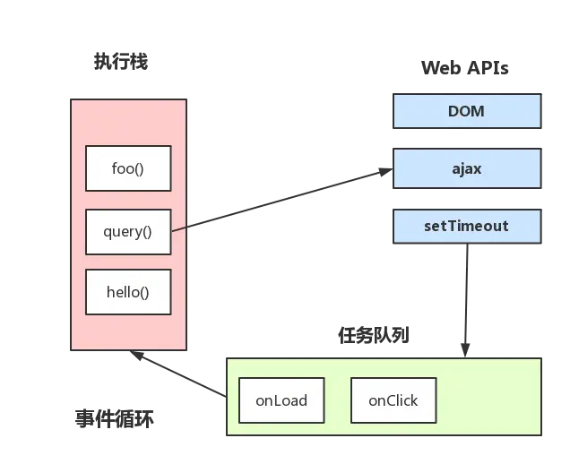

从 Event Loop 谈 JS 的运行机制
注意，这里不谈可执行上下文，VO，scop chain等概念（这些完全可以整理成另一篇文章了），这里主要是结合 Event Loop 来谈 JS 代码是如何执行的。
读这部分的前提是已经知道了 JS 引擎是单线程，而且这里会用到上文中的几个概念：（如果不是很理解，可以回头温习）
- JS 引擎线程
- 事件触发线程
- 定时触发器线程
然后再理解一个概念：
- JS 分为同步任务和异步任务
- 同步任务都在主线程上执行，形成一个执行栈
- 主线程之外，事件触发线程管理着一个任务队列，只要异步任务有了运行结果，就在任务队列之中放置一个事件。
- 一旦执行栈中的所有同步任务执行完毕（此时 JS 引擎空闲），系统就会读取任务队列，将可运行的异步任务添加到可执行栈中，开始执行。
看图：
看到这里，应该就可以理解了：为什么有时候 setTimeout 推入的事件不能准时执行？因为可能在它推入到事件列表时，主线程还不空闲，正在执行其它代码， 所以自然有误差。
事件循环机制进一步补充
这里就直接引用一张图片来协助理解：（参考自 Philip Roberts 的演讲《Help, I'm stuck in an event-loop》） 
上图大致描述就是：
主线程运行时会产生执行栈， 栈中的代码调用某些 api 时，它们会在事件队列中添加各种事件（当满足触发条件后，如 ajax 请求完毕）
而栈中的代码执行完毕，就会读取事件队列中的事件，去执行那些回调
- 如此循环
- 注意，总是要等待栈中的代码执行完毕后才会去读取事件队列中的事件
单独说说定时器
上述事件循环机制的核心是：JS 引擎线程和事件触发线程
但事件上，里面还有一些隐藏细节，譬如调用setTimeout后，是如何等待特定时间后才添加到事件队列中的？
是 JS 引擎检测的么？当然不是了。它是由定时器线程控制（因为 JS 引擎自己都忙不过来，根本无暇分身）
为什么要单独的定时器线程？因为 JavaScript 引擎是单线程的, 如果处于阻塞线程状态就会影响记计时的准确，因此很有必要单独开一个线程用来计时。
什么时候会用到定时器线程？当使用setTimeout或setInterval时，它需要定时器线程计时，计时完成后就会将特定的事件推入事件队列中。
譬如:
setTimeout(function(){
console.log('hello!');
}, 1000);
这段代码的作用是当 1000 毫秒计时完毕后（由定时器线程计时），将回调函数推入事件队列中，等待主线程执行
setTimeout(function(){
console.log('hello!');
}, 0);
console.log('begin');
这段代码的效果是最快的时间内将回调函数推入事件队列中，等待主线程执行
注意：
- 执行结果是：先
begin后hello! 虽然代码的本意是 0 毫秒后就推入事件队列，但是 W3C 在 HTML 标准中规定，规定要求
setTimeout中低于 4ms 的时间间隔算为 4ms。 (不过也有一说是不同浏览器有不同的最小时间设定)就算不等待 4ms，就算假设 0 毫秒就推入事件队列，也会先执行
begin（因为只有可执行栈内空了后才会主动读取事件队列）
setTimeout 而不是 setInterval
用 setTimeout 模拟定期计时和直接用 setInterval 是有区别的。
因为每次 setTimeout 计时到后就会去执行，然后执行一段时间后才会继续 setTimeout，中间就多了误差 （误差多少与代码执行时间有关）
而 setInterval 则是每次都精确的隔一段时间推入一个事件 （但是，事件的实际执行时间不一定就准确，还有可能是这个事件还没执行完毕，下一个事件就来了）
而且 setInterval 有一些比较致命的问题就是：
- 累计效应（上面提到的），如果 setInterval 代码在（setInterval）再次添加到队列之前还没有完成执行，
就会导致定时器代码连续运行好几次，而之间没有间隔。 就算正常间隔执行，多个 setInterval 的代码执行时间可能会比预期小（因为代码执行需要一定时间）
- 譬如像 iOS 的 webview,或者 Safari 等浏览器中都有一个特点，在滚动的时候是不执行 JS 的，如果使用了 setInterval，会发现在滚动结束后会执行多次由于滚动不执行 JS 积攒回调，如果回调执行时间过长,就会非常容器造成卡顿问题和一些不可知的错误（这一块后续有补充，setInterval 自带的优化，不会重复添加回调）
- 而且把浏览器最小化显示等操作时，setInterval 并不是不执行程序，
它会把 setInterval 的回调函数放在队列中，等浏览器窗口再次打开时，一瞬间全部执行时
所以，鉴于这么多但问题，目前一般认为的最佳方案是：用 setTimeout 模拟 setInterval，或者特殊场合直接用 requestAnimationFrame
补充：JS 高程中有提到，JS 引擎会对 setInterval 进行优化，如果当前事件队列中有 setInterval 的回调，不会重复添加。不过，仍然是有很多问题。。。
事件循环进阶：macrotask 与 microtask
这段参考了参考来源中的第 2 篇文章（英文版的），（加了下自己的理解重新描述了下）， 强烈推荐有英文基础的同学直接观看原文，作者描述的很清晰，示例也很不错，如下： https://jakearchibald.com/2015/tasks-microtasks-queues-and-schedules/ 上文中将 JS 事件循环机制梳理了一遍，在 ES5 的情况是够用了，但是在 ES6 盛行的现在，仍然会遇到一些问题，譬如下面这题：
console.log('script start');
setTimeout(function() {
console.log('setTimeout');
}, 0);
Promise.resolve().then(function() {
console.log('promise1');
}).then(function() {
console.log('promise2');
});
console.log('script end');
嗯哼，它的正确执行顺序是这样子的：
script start
script end
promise1
promise2
setTimeout
为什么呢？因为 Promise 里有了一个一个新的概念：microtask
或者，进一步，JS 中分为两种任务类型：macrotask和microtask，在 ECMAScript 中，microtask 称为jobs，macrotask 可称为task
它们的定义？区别？简单点可以按如下理解：
macrotask（又称之为宏任务），可以理解是每次执行栈执行的代码就是一个宏任务（包括每次从事件队列中获取一个事件回调并放到执行栈中执行）
- 每一个 task 会从头到尾将这个任务执行完毕，不会执行其它
- 浏览器为了能够使得 JS 内部 task 与 DOM 任务能够有序的执行，会在一个 task 执行结束后，在下一个 task 执行开始前，对页面进行重新渲染
（`task->渲染->task->...`）
microtask（又称为微任务），可以理解是在当前 task 执行结束后立即执行的任务
- 也就是说，在当前 task 任务后，下一个 task 之前，在渲染之前
- 所以它的响应速度相比 setTimeout（setTimeout 是 task）会更快，因为无需等渲染
- 也就是说，在某一个 macrotask 执行完后，就会将在它执行期间产生的所有 microtask 都执行完毕（在渲染前）
分别什么样的场景会形成 macrotask 和 microtask 呢？
- macrotask：主代码块，
setTimeout，setInterval等（可以看到，事件队列中的每一个事件都是一个macrotask） - microtask：
Promise，process.nextTick等
补充：在 node 环境下，process.nextTick 的优先级高于 Promise，也就是可以简单理解为：在宏任务结束后会先执行微任务队列中的 nextTickQueue 部分，然后才会执行微任务中的 Promise 部分。
参考：https://segmentfault.com/q/1010000011914016
再根据线程来理解下：
- macrotask 中的事件都是放在一个事件队列中的，而这个队列由事件触发线程维护
- microtask 中的所有微任务都是添加到微任务队列（Job Queues）中，等待当前 macrotask 执行完毕后执行，而这个队列由 JS 引擎线程维护
（这点由自己理解+推测得出，因为它是在主线程下无缝执行的）
所以，总结下运行机制：
- 执行一个宏任务（栈中没有就从事件队列中获取）
- 执行过程中如果遇到微任务，就将它添加到微任务的任务队列中
- 宏任务执行完毕后，立即执行当前微任务队列中的所有微任务（依次执行）
- 当前宏任务执行完毕，开始检查渲染，然后 GUI 线程接管渲染
- 渲染完毕后，JS 线程继续接管，开始下一个宏任务（从事件队列中获取）
如图：

另外，请注意下Promise的polyfill与官方版本的区别：
- 官方版本中，是标准的 microtask 形式
- polyfill，一般都是通过 setTimeout 模拟的，所以是 macrotask 形式
- 请特别注意这两点区别,影响事件的执行顺序
注意，有一些浏览器执行结果不一样（因为它们可能把 microtask 当成 macrotask 来执行了）， 但是为了简单，这里不描述一些不标准的浏览器下的场景（但记住，有些浏览器可能并不标准）
使用 MutationObserver 实现 microtask
MutationObserver 可以用来实现 microtask （它属于 microtask，优先级小于 Promise， 一般是 Promise 不支持时才会这样做）
它是 HTML5 中的新特性，作用是：监听一个 DOM 变动， 当 DOM 对象树发生任何变动时，Mutation Observer 会得到通知
像以前的 Vue 源码中就是利用它来模拟 nextTick 的， 具体原理是，创建一个 TextNode 并监听内容变化， 然后要 nextTick 的时候去改一下这个节点的文本内容， 如下：（Vue 的源码，未修改）
var counter = 1
var observer = new MutationObserver(nextTickHandler)
var textNode = document.createTextNode(String(counter))
observer.observe(textNode, {
characterData: true
})
timerFunc = () => {
counter = (counter + 1) % 2
textNode.data = String(counter)
}
不过，Vue（2.5+）的 nextTick 实现移除了 MutationObserver 的方式（据说是兼容性原因）， 取而代之的是使用 MessageChannel （当然，默认情况仍然是 Promise，不支持才兼容的）。
MessageChannel 属于宏任务，优先级是：MessageChannel->setTimeout， 所以 Vue（2.5+）内部的 nextTick 与 2.4 及之前的实现是不一样的，需要注意下。